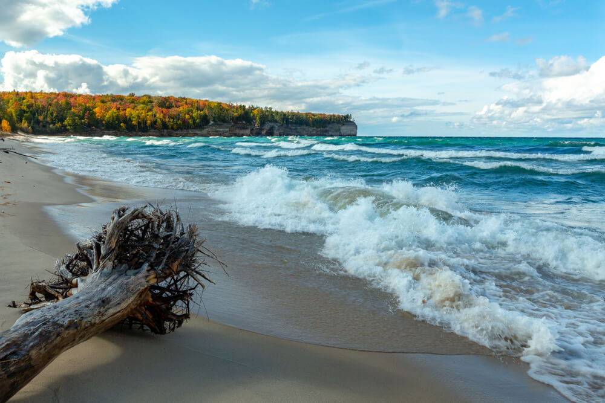
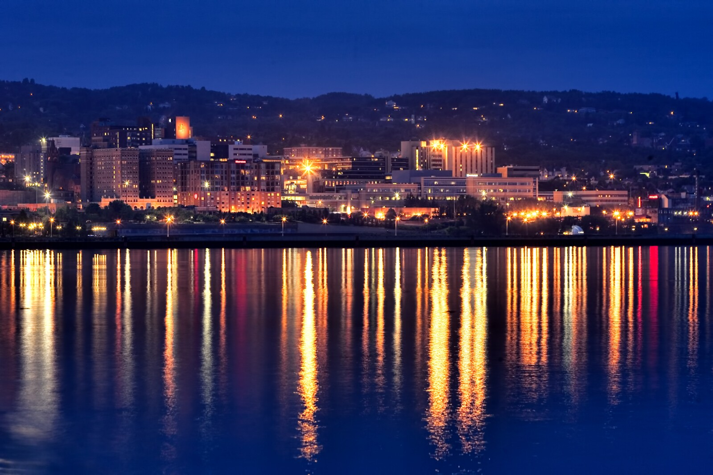
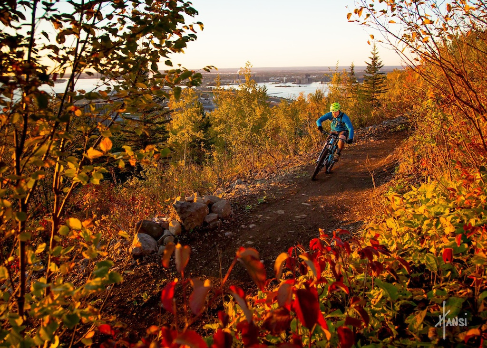

Why I Chose UMD

My decision to choose the University of Minnesota Duluth was an easy one, because it's the kind of place where I can really see myself growing—both in the classroom and outside of it. The Business Analytics program caught my attention right away because it blends my interest in business with my love for problem-solving and data. I like that UMD focuses on hands-on learning, so I'll get real experience working with numbers, trends, and strategies that make an impact.
What really makes UMD stand out for me is the atmosphere. The campus has this close-knit, welcoming vibe, and being surrounded by the natural beauty of Duluth makes it easy to stay balanced and inspired. Between the great professors, the supportive community, and the chance to study something I'm genuinely passionate about, choosing UMD just felt right.
The University's commitment to innovation and hands-on learning experiences perfectly aligned with my academic goals. The smaller class sizes and direct access to professors were major factors in my decision, as they ensure more personalized attention and better learning opportunities.
Additionally, UMD's strong connections with industry partners and excellent career placement rates made it an ideal choice for building my future career path.
Discovering Duluth
Duluth offers an unparalleled blend of urban amenities and natural beauty that makes it an exceptional place to live and study:
Natural Beauty
The stunning Lake Superior shoreline, hiking trails, and scenic parks provide endless opportunities for outdoor activities and recreation. Walking along the lakewalk at sunrise, you'll experience the peaceful sound of waves lapping against the shore while watching ships enter the harbor. The surrounding wilderness areas offer everything from easy nature walks to challenging hiking trails, making it perfect for both casual strolls and serious adventures.
City Life
A vibrant arts scene, diverse dining options, and a rich cultural heritage make Duluth a dynamic city for students. The historic downtown area blends modern amenities with charming architecture, while the local restaurants serve everything from fresh Lake Superior fish to international cuisine. The city's many festivals, museums, and theaters ensure there's always something exciting happening, creating the perfect balance of entertainment and culture.
Seasonal Activities
From summer water sports to winter skiing at Spirit Mountain, every season brings new adventures. In summer, the trails come alive with hikers and mountain bikers, while fall paints the hillsides in brilliant colors. Winter transforms the landscape into a snowy playground for skiing and snowboarding, and spring brings the excitement of watching the lake ice break up and nature come back to life.
Why Choose Duluth?
Experience the beauty and charm of Duluth through this captivating video showcasing what makes our city special.
Campus Highlights & Personal Experiences
Academic Excellence
Engaging classes with dedicated professors who bring real-world experience into the classroom. The faculty's commitment to student success creates an environment where questions are encouraged and individual attention is the norm. Through interactive lectures, hands-on labs, and real-world projects, learning becomes an immersive experience.
Campus Community
A welcoming environment where students from diverse backgrounds come together to learn and grow. The strong sense of community at UMD makes it easy to find study groups, join clubs, and make lasting friendships. Campus events and traditions help create a home away from home for all students.
Research Opportunities
Access to cutting-edge research projects and state-of-the-art facilities. Students have the chance to work alongside faculty on meaningful research that impacts real-world challenges. These experiences provide valuable skills and often lead to publications and conference presentations.
Student Life
Vibrant campus activities, clubs, and events create a rich college experience. From student organizations and intramural sports to campus traditions and cultural celebrations, there's always something happening. These activities help build leadership skills and create lasting memories.
Canal Park
One of my favorite things to do in Duluth is waking up early to catch the sunrise in Canal Park. The sky over Lake Superior turns this mix of orange, pink, and purple, and the sound of the waves hitting the rocks is meditative. It's become something I do to help clear my mind and reminds me why I chose to live and study here.
Lakewalk
During the summer, the Lakewalk is one of my favorite places to go relax. I love walking along the path while watching ships come into the harbor. On warm evenings, there's often live music playing somewhere nearby, and the air smells like lake breeze and food from Canal Park restaurants. It's the perfect way to end a day, simple, peaceful, and uniquely Duluth.
Superior Hiking Trail
The first time I hiked the Superior Hiking Trail, I wasn't fully prepared for how beautiful some parts would be. The view from the top overlooking the lake is unreal, it feels like standing on the edge of the world. I go and hike it every chance I get, usually with friends, and every trip brings something new, different weather, new wildlife, or just that quiet peace you can't find anywhere else.
Spirit Mountain
As someone who loves skiing, Spirit Mountain quickly became one of my favorite spots. It's just minutes from campus, and it's perfect for unwinding after a long week. Some of my best memories are night skiing under the lights with friends, followed by grabbing food downtown. It's one of those classic Duluth experiences that makes winter something to look forward to!